GDC 2026: Love and Deepspace — 乙女ゲームのロマンスを再定義した「戦闘」と「日常」の設計哲学
本記事は、GDC（Game Developers Conference＝世界最大のゲーム開発者向けカンファレンス。毎年3月にサンフランシスコで開催され、技術・デザイン・ビジネスなど多岐にわたるセッションが行われる）2026 での講演内容をもとに構成しています。
「ロマンスゲームに本格的な戦闘システムを入れる」と聞いて、あなたはどう感じるだろうか。2020年の開発初期デモが公開された時、プレイヤーの反応は「over the top（やりすぎ）」「cringy（痛い）」「awkward（ぎこちない）」と圧倒的にネガティブだった。しかし2024年の正式ローンチ後、同じゲームに対するプレイヤーの声は「This is God!!!（これは神!!!）」「the Mermaid Card is truly the pinnacle of aesthetic and technical excellence（人魚カードは美学と技術の頂点）」へと劇的に変わった。
中国のInfold Games（Papergames）が開発した『Love and Deepspace（恋与深空）』は、ローンチから2年で全世界8,000万人以上のプレイヤーを獲得し、Best Mobile Gameを受賞した。乙女ゲーム（Otome Game）というニッチなジャンルを、いかにして主流のゲーム市場へと押し上げたのか。その鍵は、従来のロマンスゲームの常識を打ち破る「Combat as Romance（戦闘としてのロマンス）」と「Everyday Life as Romance（日常としてのロマンス）」という2つの柱にあった。
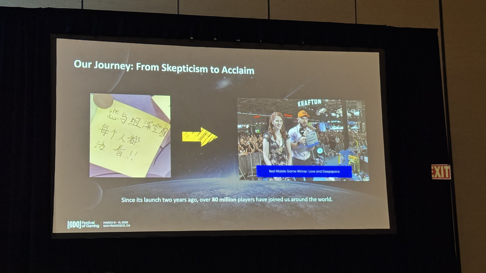
セッション情報
- イベント: GDC Festival of Gaming 2026
- 日時: Thursday, March 12, 2026 | 1:50pm - 2:50pm
- タイトル: Redefining What Romance Can Be in ‘Love and Deepspace’
- スピーカー: Lizi Cheng（Infold Games / Papergames）
- 会場: Room 2005, West Hall
- パス: Festival Pass, Game Changer Pass
- レベル: Entry-Level（入門者向け）
- トラック: Design
- 形式: Lecture（レクチャー＝スピーカーが聴衆に向けて発表する講演形式）
乙女ゲームとは何か — ニッチからメインストリームへ
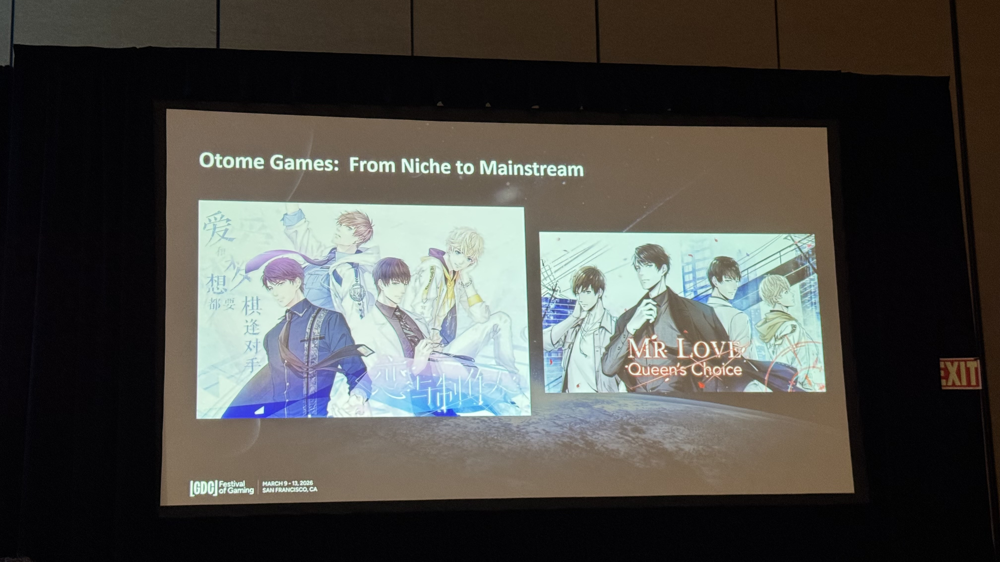
セッション冒頭、Lizi Cheng は乙女ゲーム（Otome Game）というジャンルの説明から始めた。
“Otome games are a sub-genre of romance games with romance at its core. In these games, players embark on their own adventures, they encounter one or more charismatic male characters and develop romantic relationships with them.” （乙女ゲームはロマンスを核とするロマンスゲームのサブジャンルだ。プレイヤーは自分自身の冒険に出かけ、1人以上の魅力的な男性キャラクターに出会い、恋愛関係を築いていく。）
乙女ゲームは美しいビジュアル、豊かなストーリー、魅力的なキャラクターを特徴とし、ゲームプレイの中心はテキストベースのインタラクションだ。プレイヤーはラブインタレスト（恋愛対象キャラクター）との関わりを通じて物語を進め、ファンアート、ファンフィクション、AMV（Anime Music Video）など活発な二次創作コミュニティを形成する。
しかし従来の乙女ゲームは、限られたリソースで開発されることが多く、テキストとビジュアルノベル形式に特化した小規模なタイトルが主流だった。
“As a result, they typically have been developed with more limited resources, focusing primarily on these smaller scopes and teams.” （結果として、小規模なスコープとチームに焦点を当て、より限られたリソースで開発されることが一般的だった。）
この構造を変えたのが、Infold Games（Papergames）の前作『Mr. Love: Queen’s Choice（恋与制作人）』だった。同作は中国の乙女ゲーム市場をメインストリームへと押し上げる基盤を築いた。
Love and Deepspace の挑戦 — 従来のロマンスの枠を超える
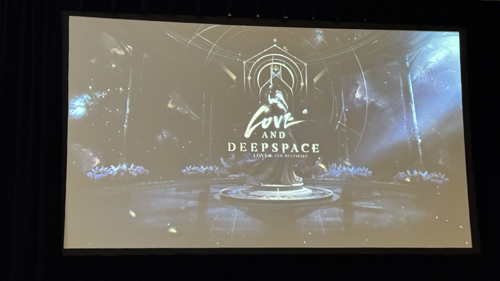
『Love and Deepspace』の開発にあたり、チームが最初に問うたのはシンプルだが大胆な問いだった。
“So when we began developing Love and Deepspace, our first question was, how do we reach players who have never engaged with this genre before?” （Love and Deepspaceの開発を始めたとき、最初の問いは「このジャンルに触れたことのないプレイヤーにどう届けるか」だった。）
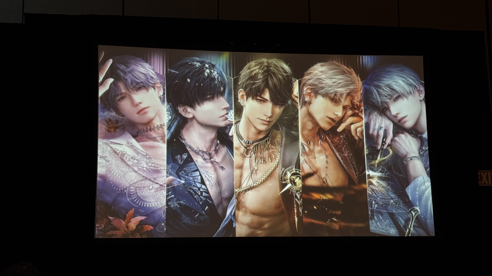
Love and Deepspaceは近未来を舞台にしたロマンスゲームだ。プレイヤーはラブインタレストと対面でインタラクションでき、一緒にワークアウトしたり、勉強したり、リラックスしたり、さらにはモンスターと戦ったりもできる。
チームが目指したのは、従来のロマンティックなシナリオを超え、あらゆるタイプのプレイヤーを惹きつけること。
“We want all different types of players to fall in love with the game and our love interest. To this end, we try many unexpected or even counterintuitive types of gameplay that are never before seen in this genre.” （あらゆるタイプのプレイヤーにゲームとラブインタレストを好きになってほしい。そのために、このジャンルでは前例のない、予想外で直感に反するタイプのゲームプレイを数多く試みた。）
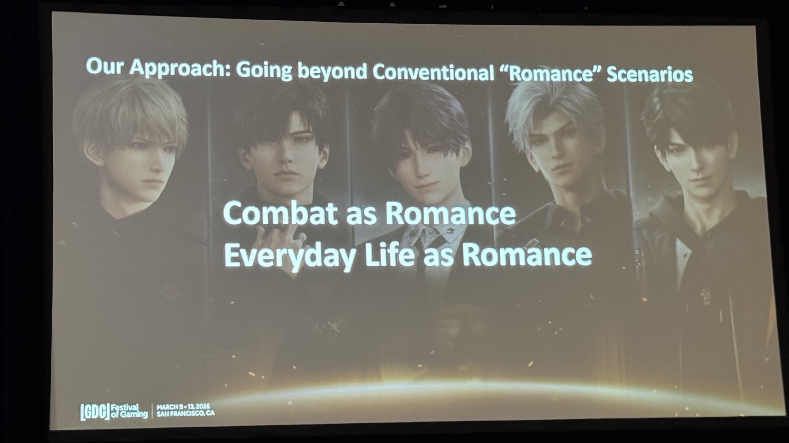
その結果たどり着いたのが、セッションの2つの柱となるアプローチだ。
- Combat as Romance（戦闘としてのロマンス）
- Everyday Life as Romance（日常としてのロマンス）
Part 1: Combat as Romance — 一緒に戦うことがロマンスになる
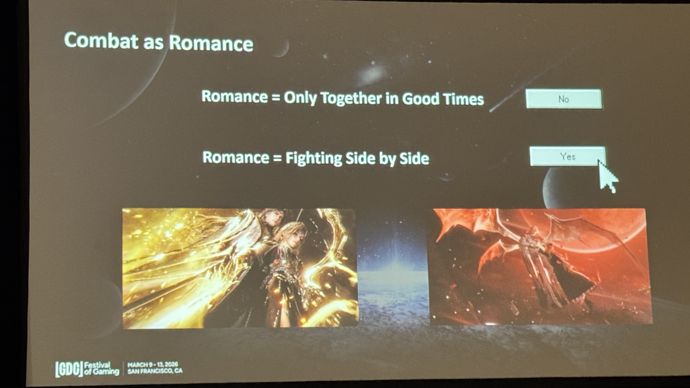
ロマンス × 戦闘という「非常識」
Love and Deepspaceには、本格的なリアルタイム戦闘システムが搭載されている。プレイヤーは超能力（Evol）を使い、Wanderers（ワンダラーズ）と呼ばれる地球外モンスターとラブインタレストとともに戦う。
“Maybe right now you’re thinking, whoa, isn’t this supposed to be a romance game? But I promise you after you experience it, the integration of romance and combat actually makes a lot of sense. And this design is rooted in our unique understanding of romance.” （今あなたは「え、これロマンスゲームじゃないの？」と思っているかもしれない。でも約束する、体験すればロマンスと戦闘の統合は実に理にかなっている。そしてこの設計は、ロマンスに対する私たちの独自の理解に根ざしている。）
チームの信念は明快だった。ロマンスとは楽しい時だけを共有することではない。
“Fighting side by side can also be the pinnacle of romance.” （一緒に戦うこともまた、ロマンスの頂点になりうる。）
危機的瞬間で鍛えられた信頼と感情は忘れられないものになる。そしてチームは、恋人同士の対等で互いに支え合う関係を強調した。
“The emotional bonds are strengthened. The trust and feelings forged in moments of crisis become unforgettable. And we also emphasize equal and mutual support between lovers.” （感情的な絆は強化される。危機の瞬間に鍛えられた信頼と感情は忘れられないものになる。そして私たちは恋人同士の対等で互いに支え合う関係を重視している。）
デュアルキャラクター戦闘システム
この思想を具現化するため、チームは「一緒に戦う体験」を中心に据えたデュアルキャラクター戦闘システムを設計した。
“And that’s why we designed a dual character combat system centered around the experience of fighting side by side.” （だからこそ、一緒に戦う体験を中心としたデュアルキャラクター戦闘システムを設計した。）
プレイヤーは常に頼れるパートナーが隣にいることを感じられる。戦闘中も一人ではなく、誰かがいつも支えてくれる。
“Someone is always there to support you. In our early concepts, fighting alongside the one you love is kind of like spice — it’s exciting.” （誰かがいつもそばで支えてくれる。初期コンセプトでは、愛する人と一緒に戦うことはスパイスのようなもの——わくわくするものだと考えていた。）
4年間の進化 — 拒絶から共感へ
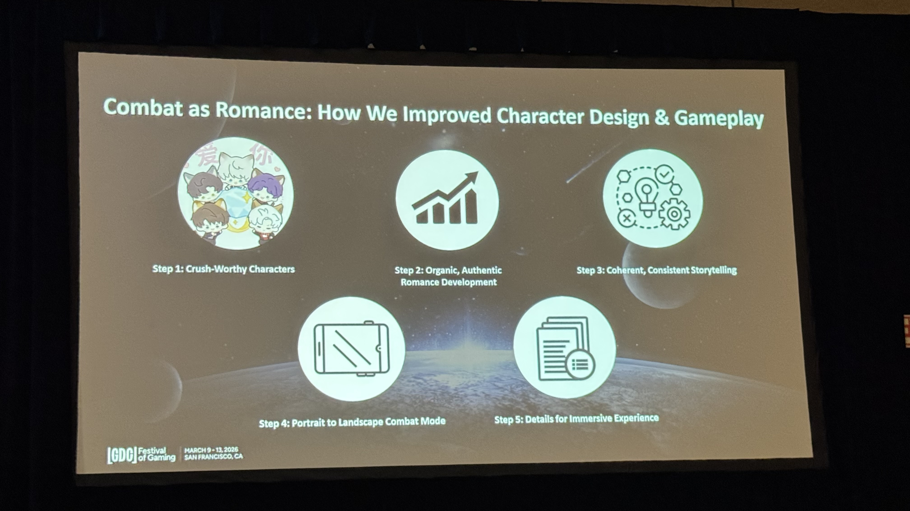
しかし理想の実現は容易ではなかった。Cheng は2020年の初期デモと2024年のローンチ版を比較して見せた。
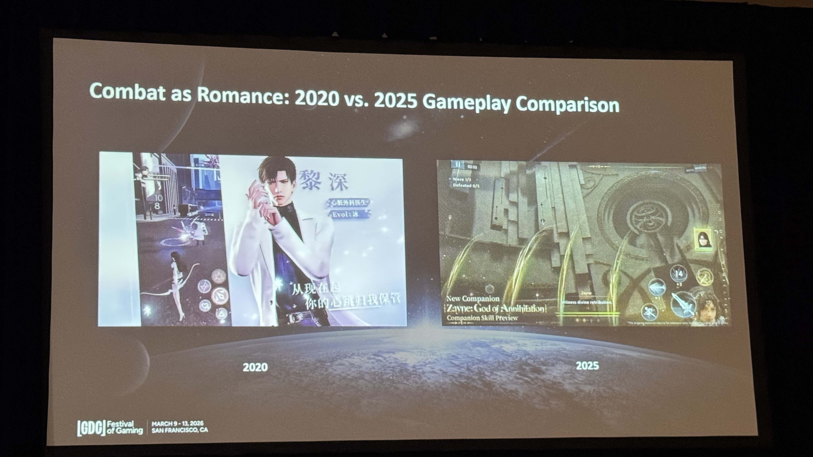
“But that was easier said than done. How does it actually work to develop a gameplay that conveys love through combat?” （しかしそれは言うは易く行うは難し。戦闘で愛を伝えるゲームプレイを実際にどう開発するのか？）
2020年版への反応は壊滅的だった。
“People thought it was over the top. It was poorly executed. Battle was awkward and even funny in an embarrassing way.” （やりすぎだと思われた。出来が悪かった。戦闘はぎこちなく、恥ずかしい意味で笑えるものだった。）
プレイヤーからは「cringy（痛い）」という評価が圧倒的だった。しかし2024年のローンチ後、評価は劇的に好転した。
“Players were not only more receptive but were also able to genuinely appreciate the emotional experience of fighting side by side.” （プレイヤーはより受容的になっただけでなく、一緒に戦う感情的体験を心から評価できるようになった。）
改善の5ステップ
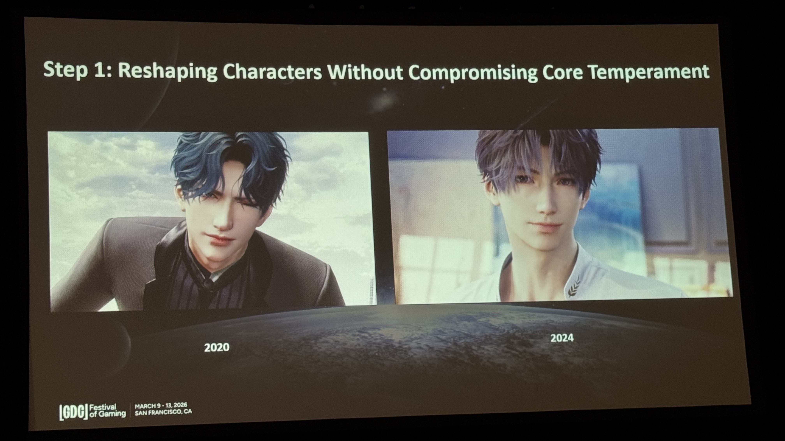
この転換はどのように実現されたのか。Cheng は5つのステップに分解して説明した。
Step 1: 魅力的なキャラクター — “Crush-Worthy Characters”
最初の問題はシンプルだった。
“The first question we had to address was pretty straightforward. They just weren’t hot enough.” （最初に取り組むべき問題はかなり単純だった。キャラクターが十分に魅力的でなかった。）
ロマンティックな引力と感情的スパークを生み出せなければ、何も機能しない。チームは根本原因を分析し、モバイルゲームの常識が足かせになっていることを発見した。
“We were lowering our visual ambitions from the early on. We thought we had to follow typical mobile game standards… but this assumption was actually holding us back.” （初期段階からビジュアルの目標を下げていた。典型的なモバイルゲーム基準に従うべきだと思っていたが、この思い込みが実は足を引っ張っていた。）
戦略を転換し、コンソールレベルの品質を先に追求してからモバイル最適化する方針に変更。キャラクターをゼロから再構築した。
“We then rebuilt our characters from the ground up, increasing each love interest’s polygon count to 102K and raising the rig to over 500 bones. These were levels typically reserved for PC or console games.” （キャラクターをゼロから再構築した。各ラブインタレストのポリゴン数を10万2千に増やし、リグを500ボーン以上に引き上げた。これらはPC・コンソールゲームに通常用いられる水準だ。）
Step 2: 自然なロマンスの発展 — “Organic, Authentic Romance Development”
ビジュアル改善後の次の課題は、キャラクターのパーソナリティを深め、段階的な親密感を設計すること。
“Redefining relationships by creating a gradual sense of intimacy.” （段階的な親密感を作ることで関係性を再定義する。）
Step 3: 一貫したストーリーテリング — “Coherent, Consistent Storytelling”
2020年版で「cringe」と評価された根本原因は、インタラクション自体ではなくタイミングにあった。
“It wasn’t that the intimate interactions themselves were cringe. It was that the timing did not match the player’s expectations.” （親密なインタラクション自体が痛いのではなかった。タイミングがプレイヤーの期待と合っていなかったのだ。）
開発者はプレイヤーと同じ背景知識を共有していない。これは見落としがちな落とし穴だ。
“Players don’t share the same background knowledge that we have. And so we should craft the order of events carefully.” （プレイヤーは私たちと同じ背景知識を持っていない。だからイベントの提示順序を慎重に設計すべきだ。）
チームはコンテンツを再構成した。序盤は抑制的でフォーマルな関係にし、戦闘の緊張感と調和させた。ナラティブの進行と段階的な感情の発展を通じて互いの理解を深め、感情的基盤が確立された後により親密な戦闘インタラクションを導入した。
“After that emotional foundation is established, we introduce more varied and intimate combat interactions, guided by each character’s identity and backstory. So that these moments can emerge naturally within the combat.” （感情的基盤が確立された後に、各キャラクターのアイデンティティとバックストーリーに導かれた、より多様で親密な戦闘インタラクションを導入する。こうした瞬間が戦闘の中で自然に生まれるように。）
Step 4: ポートレートからランドスケープへの戦闘モード切替
ロマンスの親密感を保つためポートレートモード（縦画面）を採用していたが、戦闘にそのまま適用すると問題が生じた。
“This assumption was actually in conflict with the combat gameplay… characters work closely, but at the sacrifice of a wider field of view. This makes it difficult to read the battlefield and track enemy behavior.” （この前提は実際には戦闘ゲームプレイと矛盾していた。キャラクターは近くに映るが、広い視野が犠牲になる。戦場を把握し敵の行動を追跡することが困難になる。）
複数回のイテレーションを経て、チームは大胆な決断を下した。戦闘時はランドスケープ（横画面）に動的に切り替える。
“After multiple iterations, we made a bold decision to switch combat into landscape mode, transitioning from portrait to landscape when players are entering battle.” （複数回のイテレーションを経て、戦闘をランドスケープモードに切り替えるという大胆な決断をした。プレイヤーが戦闘に入る際にポートレートからランドスケープへ移行する。）
結果として、ポートレートでロマンスの親密感を、ランドスケープで戦闘の操作性を両立できた。最初はプレイヤーも少し戸惑ったが、切り替え頻度を慎重にコントロールしたことで素早く適応した。
面白いエピソードも生まれた。
“If you see someone switching their phone between portrait and landscape mode frequently, they are probably playing this game. This was a fun surprise for us. We love that this became a distinctive feature of the gameplay experience.” （誰かが縦と横の画面切り替えを頻繁にしていたら、おそらくこのゲームをプレイしている。これは楽しいサプライズだった。これがゲームプレイ体験の特徴的なシグネチャーになったことが嬉しい。）
Step 5: 没入感のためのディテール
戦闘体験をさらに磨くため、チームは協力的なインタラクションの細部にこだわった。
- 合体攻撃: プレイヤーとラブインタレストがタイミングを合わせて必殺技を繰り出し、より大きなダメージを与える
- 身を挺した防御: ラブインタレストが攻撃からプレイヤーを庇う
- 感情的リアクション: プレイヤーが攻撃されると怒り、一時的に攻撃力が上昇
- 戦闘中の会話: チームメイトのように互いの状態を確認し合う
“We were ultimately able to deliver a combat experience where players genuinely feel like they are fighting alongside him, in a way that feels right.” （最終的に、プレイヤーが「本当に一緒に戦っている」と実感できる戦闘体験を、自然な形で届けることができた。）
開発者自身の「戦い」
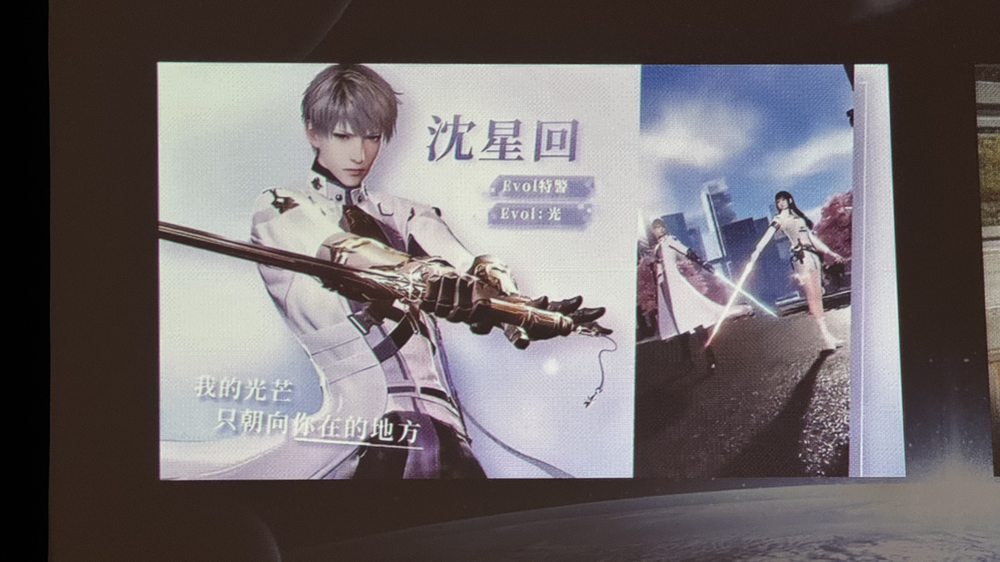
セッション中には戦闘モンタージュ映像も上映され、進化の集大成が披露された。Cheng は開発過程を振り返り、こう語った。
“The process of creating the romantic combat experience — as developers we also feel like going through a combat of our own. We’ve accepted new challenges and never gave up. Failure in game development isn’t something to be scared of. You just try again.” （ロマンティックな戦闘体験を作るプロセスは、開発者としても自分たち自身の戦いを経験しているようなものだった。新しい挑戦を受け入れ、決して諦めなかった。ゲーム開発において失敗は怖れるものではない。ただもう一度やり直せばいい。）
Part 2: Everyday Life as Romance — 日常がロマンスになる
セッション後半では、もう一つの柱「Everyday Life as Romance」が語られた。
“Life can be romantic. And romance can be present in everyday rituals.” （日常はロマンチックになりうる。そしてロマンスは日々の習慣の中に存在しうる。）
ライフシミュレーションシステム
Love and Deepspaceでは、精巧なライフシミュレーションシステムにより、プレイヤーがゲーム内で日常の伴侶体験を味わえる。
“We designed an intricate life-simulation system that allows players to experience genuine daily companionship within the game. This system covers all aspects of life.” （プレイヤーがゲーム内で真の日常的な伴侶体験を味わえる精巧なライフシミュレーションシステムを設計した。このシステムは生活のあらゆる側面をカバーする。）
具体的な機能は多岐にわたる。
- ファッション: ラブインタレストの服を選び、毎日異なるコーディネートを楽しむ
- 食事のアドバイス: 何を食べるか迷ったら、ラブインタレストにおすすめを聞ける
- ARコンパニオンモード: 勉強中、ジム、就寝時にARで現実世界にラブインタレストを召喚
デザイン哲学 — 「好きな人と日常を共有したい」
“Our design approach is based on the idea that when it comes to someone you love, you want to spend time together and share details about your daily life with him.” （私たちのデザインアプローチは、好きな人と一緒に過ごし、日常の細かいことを共有したいという思いに基づいている。）
チームは従来のゲームプレイの枠にとどまらず、日常生活を起点として、ラブインタレストと過ごす方法を継続的に拡張した。
ゲームを超えたライフスタイルアプリ的機能
驚くべきことに、Love and Deepspaceは通常ライフスタイルアプリにしかない機能まで搭載している。
“We even developed features that are typically found only in lifestyle apps — game notebooks, schedule reminders, and you can even track your period in there.” （ライフスタイルアプリにしか通常見られない機能まで開発した——ゲーム内ノートブック、スケジュールリマインダー、さらには生理周期のトラッキングまでできる。）
これらの機能はすべて「日常生活」というテーマの下に統一され、実用性と高いカスタマイズ性を備えている。
“Focusing on practical details and offering a high degree of customization and creative freedom.” （実用的なディテールに焦点を当て、高度なカスタマイズ性と創造的自由度を提供する。）
プレイタイムとパーソナライズされたデート
ゲーム内にはリアルなデートをシミュレーションする「プレイタイム機能」もある。ボードゲームを一緒に遊んだり、カップル写真を撮ったり、クレーンゲームを楽しんだりできる。
重要なのは、各キャラクターの個性がデートの体験に反映されること。チームは高度にパーソナライズされたビヘイビアツリー（行動木＝AIの意思決定を階層的に構造化する手法）システムを構築した。
“Each character has a distinct personality — dating each of them should feel different.” （各キャラクターには異なる個性がある。それぞれとのデートは異なる体験であるべきだ。）
クレーンゲームの例が印象的だった。
- Xavier（沈星回）: おおらかで楽天的、少しぼんやりしている。リラックスした雰囲気でゲームを楽しむ
- Zayne（黎深）: 職業柄（心臓外科医）、正確で決断力のある動き。静かにプレイヤーをサポートする
- Rafayel: 活発で超熱心。夢中になりすぎて順番を忘れることも
- 4人目のキャラクター: 意外にもゲームを楽しみ、高い腕前でプレイヤーに教えてくれる
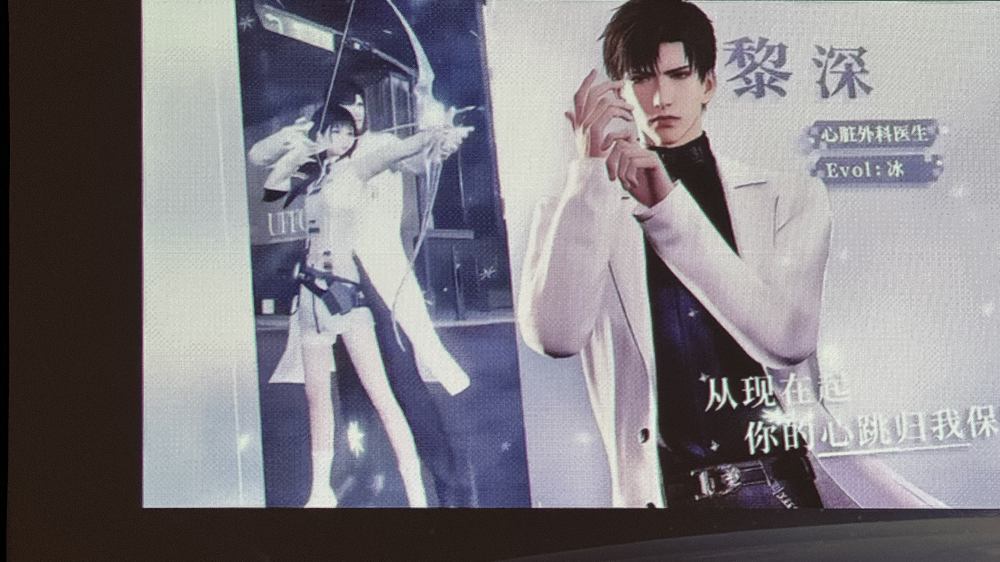
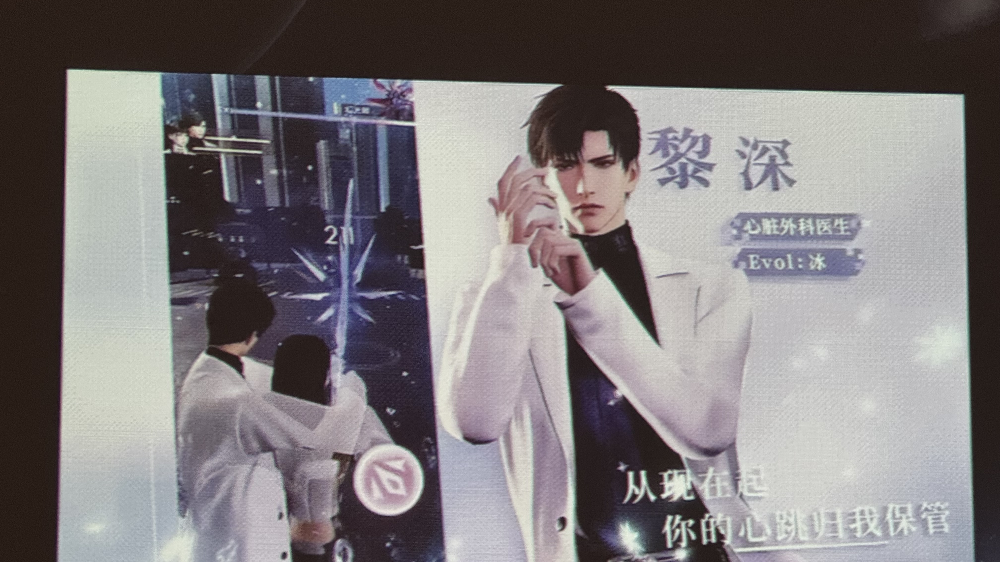
“Because of these rich character settings, players gradually come to understand the love of spending time with each of them. These details are extremely effective and important for both character and relationship building.” （これらの豊かなキャラクター設定により、プレイヤーはそれぞれと過ごす時間の喜びを徐々に理解していく。こうしたディテールはキャラクターと関係性の構築の両方において極めて効果的で重要だ。）
Quality Time Companion Mode — 現実の孤独に寄り添う
Love and Deepspaceが独自なのは、ゲーム内だけでなく現実の生活にまで踏み込んでいる点だ。
“Have you ever felt alone while studying, working, exercising? Once something good happens to you, wish there were someone you could share with. That sense of loneliness — in many ways, that’s exactly what a partner is meant to do.” （勉強中、仕事中、運動中に孤独を感じたことはないだろうか。何かいいことがあった時、誰かに共有したいと思ったことは。その孤独感——多くの意味で、それこそまさにパートナーの存在意義だ。）
「Quality Time Companion Mode」では、仕事・勉強・運動・休憩中にラブインタレストを呼び出せる。
“Sometimes even just glancing up and meeting his eyes during your short break can bring a sense of warmth and comfort.” （休憩中にふと見上げて目が合うだけで、温かさと安心感をもたらしてくれることがある。）
Home System — 生活感のあるリアリズム
2025年12月には画期的な「Home System」がローンチされた。プレイヤーはゲーム内に自分だけの空間を持ち、ラブインタレストとロマンチックなインタラクションや日常の儀式を体験できる。
“The heart of the system is a strong sense of lived-in realism.” （システムの核心は、生活感のあるリアリズムだ。）
特別な日には空に花火が上がるなど、細かくも意味のあるディテールが多数設計されている。
“Many players have said that within this space, they were able to experience true happiness. As developers, this response means a lot to us.” （多くのプレイヤーがこの空間の中で本当の幸福を体験できたと語っている。開発者として、この反応は私たちにとって非常に大きな意味がある。）
AR/VR — 仮想と現実の境界を超える
チームはAR（拡張現実）とVR（仮想現実）も活用し、仮想と現実世界の境界を打破している。
“We leverage AR and VR to break the barriers between virtual and real world.” （ARとVRを活用して、仮想と現実世界の境界を打ち破る。）
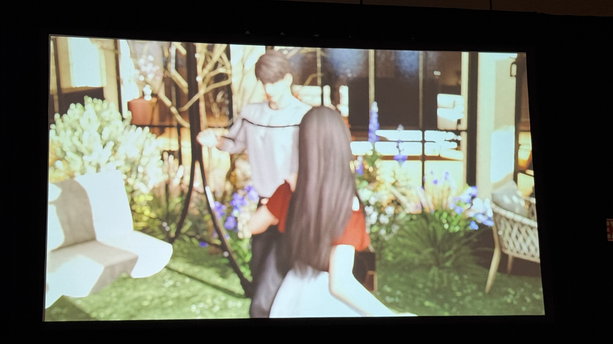
設計原則 — 現実のパートナーができること、それ以上を
セッション全体を貫く設計原則が、最後に明確に語られた。
“We want our love interest to do everything a real-life partner can do and more. Those things a real boyfriend struggles with, he will try his best.” （ラブインタレストには、現実のパートナーができることすべて、そしてそれ以上をさせたい。現実の彼氏が苦手なことでも、ゲーム内では全力で挑戦する。）
この言葉には、チームの設計思想が凝縮されている。ゲームの中のパートナーは、現実のパートナーシップが持つ温かさ、信頼、共有の喜びを再現しつつ、現実では難しい「理想のパートナー体験」を提供する。
まとめ — ロマンスの再定義
Love and Deepspaceの成功は、乙女ゲームの常識を3つの点で打ち破ったことにある。
| 従来の常識 | Love and Deepspace のアプローチ |
|---|---|
| ロマンスはテキストベース | リアルタイム戦闘でロマンスを表現 |
| ゲーム内で完結 | ARコンパニオン・生理トラッカーなど現実生活に拡張 |
| モバイルゲーム品質 | ポリゴン10万2千・500ボーンのコンソール級キャラクター |
Cheng が語った「Failure in game development isn’t something to be scared of. You just try again.（ゲーム開発において失敗は怖れるものではない。ただもう一度やり直せばいい。）」という言葉は、2020年の壊滅的な反応から4年で8,000万プレイヤーを獲得するまでの旅路を端的に表している。
“And bring more happiness to all of our players. And this concludes my talk. Thank you so much for your attention.” （すべてのプレイヤーにもっと幸せを届けたい。以上で私の講演を終わります。ご清聴ありがとうございました。）
ロマンスゲームの可能性を拡張し続けるLove and Deepspace。その挑戦はまだ続いている。